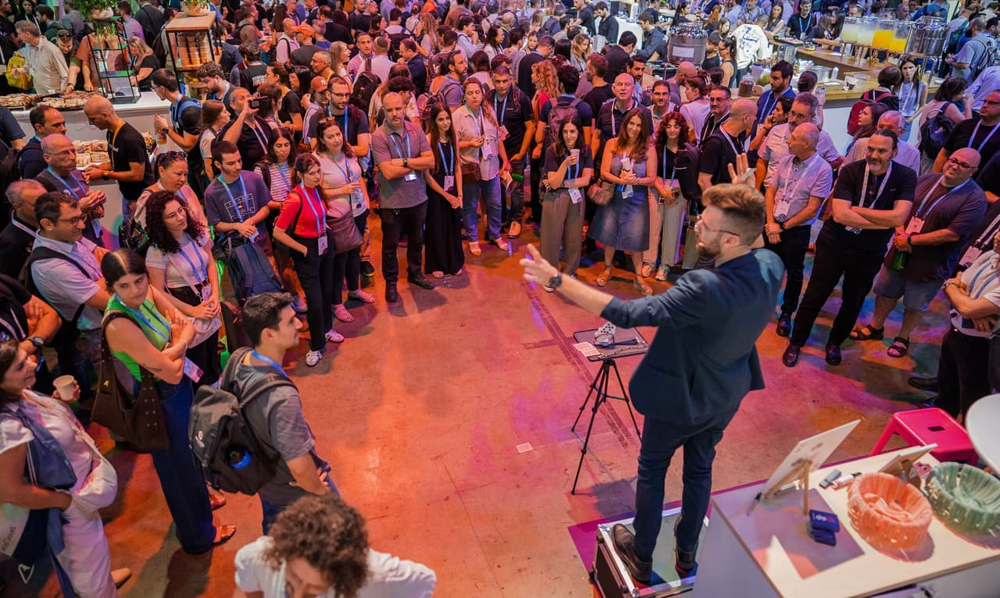
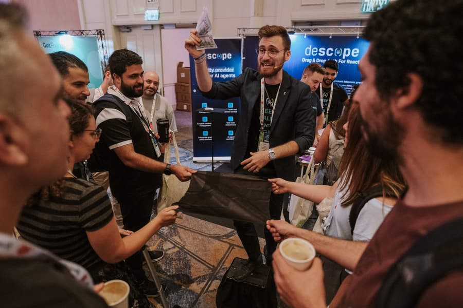

Engagement engineering for conferences
At conferences you pay for opportunity. Let's turn it into pipeline.
A live, interactive performance built around your positioning - with initial qualification and handoff to your sales team. Performed at your booth, adapted in real time to how the floor is moving.
Trusted on the floor by

Three days, one floor, no wasted passers-by

See it on the floor
Book a walkthrough →Check availability
Reach Me Directly.
Give me the show and the stand size, and I'll tell you whether this is worth your budget.
- info@dorengel.com
- Dor Engel
- Based in
- Tel Aviv · Working globally
The full site - the programme, the method and the writing behind it, lands shortly. Until then this is the fastest way in, and it reaches me directly.